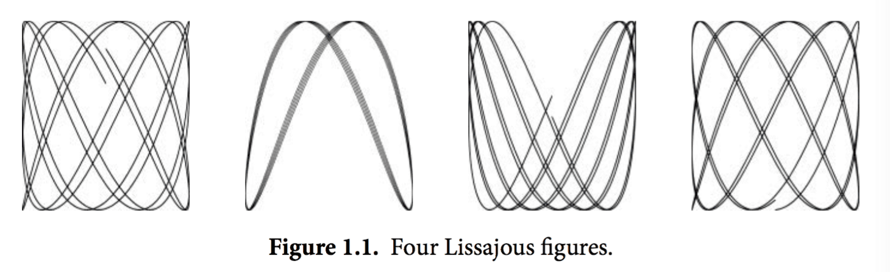

1.4. GIF动画
下面的程序会演示Go语言标准库里的image这个package的用法，我们会用这个包来生成一系列的bit-mapped图，然后将这些图片编码为一个GIF动画。我们生成的图形名字叫利萨如图形（Lissajous figures），这种效果是在1960年代的老电影里出现的一种视觉特效。它们是协振子在两个纬度上振动所产生的曲线，比如两个sin正弦波分别在x轴和y轴输入会产生的曲线。图1.1是这样的一个例子：

译注：要看这个程序的结果，需要将标准输出重定向到一个GIF图像文件（使用 ./lissajous > output.gif 命令）。下面是GIF图像动画效果：

这段代码里我们用了一些新的结构，包括const声明，struct结构体类型，复合声明。和我们举的其它的例子不太一样，这一个例子包含了浮点数运算。这些概念我们只在这里简单地说明一下，之后的章节会更详细地讲解。
gopl.io/ch1/lissajous
// Lissajous generates GIF animations of random Lissajous figures.
package main
import (
"image"
"image/color"
"image/gif"
"io"
"math"
"math/rand"
"os"
"time"
)
var palette = []color.Color{color.White, color.Black}
const (
whiteIndex = 0 // first color in palette
blackIndex = 1 // next color in palette
)
func main() {
// The sequence of images is deterministic unless we seed
// the pseudo-random number generator using the current time.
// Thanks to Randall McPherson for pointing out the omission.
rand.Seed(time.Now().UTC().UnixNano())
lissajous(os.Stdout)
}
func lissajous(out io.Writer) {
const (
cycles = 5 // number of complete x oscillator revolutions
res = 0.001 // angular resolution
size = 100 // image canvas covers [-size..+size]
nframes = 64 // number of animation frames
delay = 8 // delay between frames in 10ms units
)
freq := rand.Float64() * 3.0 // relative frequency of y oscillator
anim := gif.GIF{LoopCount: nframes}
phase := 0.0 // phase difference
for i := 0; i < nframes; i++ {
rect := image.Rect(0, 0, 2*size+1, 2*size+1)
img := image.NewPaletted(rect, palette)
for t := 0.0; t < cycles*2*math.Pi; t += res {
x := math.Sin(t)
y := math.Sin(t*freq + phase)
img.SetColorIndex(size+int(x*size+0.5), size+int(y*size+0.5),
blackIndex)
}
phase += 0.1
anim.Delay = append(anim.Delay, delay)
anim.Image = append(anim.Image, img)
}
gif.EncodeAll(out, &anim) // NOTE: ignoring encoding errors
}
当我们import了一个包路径包含有多个单词的package时，比如image/color（image和color两个单词），通常我们只需要用最后那个单词表示这个包就可以。所以当我们写color.White时，这个变量指向的是image/color包里的变量，同理gif.GIF是属于image/gif包里的变量。
这个程序里的常量声明给出了一系列的常量值，常量是指在程序编译后运行时始终都不会变化的值，比如圈数、帧数、延迟值。常量声明和变量声明一般都会出现在包级别，所以这些常量在整个包中都是可以共享的，或者你也可以把常量声明定义在函数体内部，那么这种常量就只能在函数体内用。目前常量声明的值必须是一个数字值、字符串或者一个固定的boolean值。
[]color.Color{…}和gif.GIF{…}这两个表达式就是我们说的复合声明（4.2和4.4.1节有说明）。这是实例化Go语言里的复合类型的一种写法。这里的前者生成的是一个slice切片，后者生成的是一个struct结构体。
gif.GIF是一个struct类型（参考4.4节）。struct是一组值或者叫字段的集合，不同的类型集合在一个struct可以让我们以一个统一的单元进行处理。anim是一个gif.GIF类型的struct变量。这种写法会生成一个struct变量，并且其内部变量LoopCount字段会被设置为nframes；而其它的字段会被设置为各自类型默认的零值。struct内部的变量可以以一个点（.）来进行访问，就像在最后两个赋值语句中显式地更新了anim这个struct的Delay和Image字段。
lissajous函数内部有两层嵌套的for循环。外层循环会循环64次，每一次都会生成一个单独的动画帧。它生成了一个包含两种颜色的201*201大小的图片，白色和黑色。所有像素点都会被默认设置为其零值（也就是调色板palette里的第0个值），这里我们设置的是白色。每次外层循环都会生成一张新图片，并将一些像素设置为黑色。其结果会append到之前结果之后。这里我们用到了append(参考4.2.1)内置函数，将结果append到anim中的帧列表末尾，并设置一个默认的80ms的延迟值。循环结束后所有的延迟值被编码进了GIF图片中，并将结果写入到输出流。out这个变量是io.Writer类型，这个类型支持把输出结果写到很多目标，很快我们就可以看到例子。
内层循环设置两个偏振值。x轴偏振使用sin函数。y轴偏振也是正弦波，但其相对x轴的偏振是一个0-3的随机值，初始偏振值是一个零值，随着动画的每一帧逐渐增加。循环会一直跑到x轴完成五次完整的循环。每一步它都会调用SetColorIndex来为(x,y)点来染黑色。
main函数调用lissajous函数，用它来向标准输出流打印信息，所以下面这个命令会像图1.1中产生一个GIF动画。
$ go build gopl.io/ch1/lissajous
$ ./lissajous >out.gif
练习 1.5： 修改前面的Lissajous程序里的调色板，由黑色改为绿色。我们可以用color.RGBA{0xRR, 0xGG, 0xBB, 0xff}来得到#RRGGBB这个色值，三个十六进制的字符串分别代表红、绿、蓝像素。
练习 1.6： 修改Lissajous程序，修改其调色板来生成更丰富的颜色，然后修改SetColorIndex的第三个参数，看看显示结果吧。